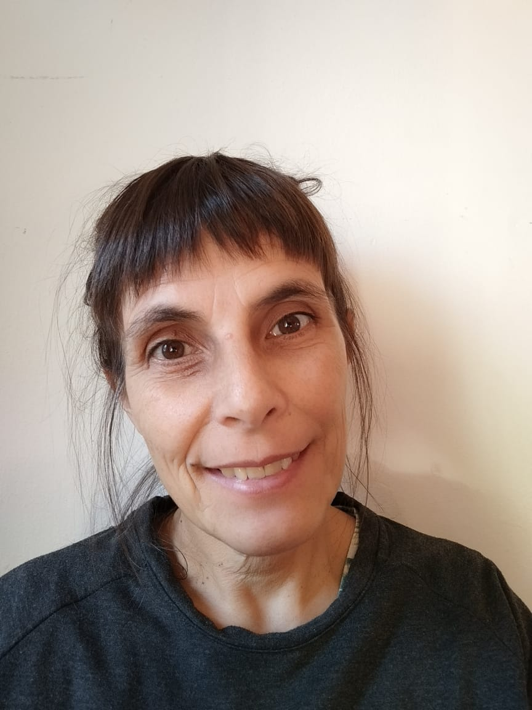

Romina Carla Fattore
Av. Lisandro de la Torre 1008, Mar del Plata, Argentina.
Cel:+54 2234367577
Datos personales
Fecha de nacimiento:
30/10/1971
Email:
fattorecitter@gmail.com
Formación Académica
Escuela N° 6 Bartolomé Mitre
Escuela Agropecuaria N° 1 Nicolás Repetto, título obtenido, Técnica Agropecuaria
Aspectos básicos de la asistencia técnica
Inges básico
Experiencia Laboral
Secretaria Administrativa Clínica Veterinaria Estrada
Secretaria Administrativa Veterinarinaria Dr Paso
Secretaria veterinaria CIVET
Informacion personal
Mi hobbies son las plantas, especialmente los cactus
Mis mejores habilidades estan relacionadas con la cocina
Porqué Henry?
Empecé con este proyecto por la insistencia y el apoyo de mi esposo, con algo de temor, ya que si bien tengo conocimientos en computación, no los tenía en todo estoy gracias a la ayuda de mi hijo esto se me hizo mas fácil.
Tengo muchas expectaivas e ilusiones de finalizar esta carrera y conseguir un trabajo, aunque se que este camino va a ser algo difícil, hacia ahí voy!